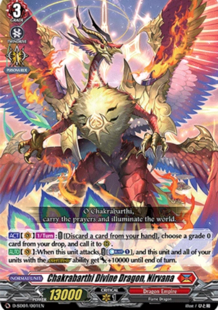
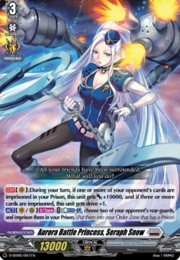
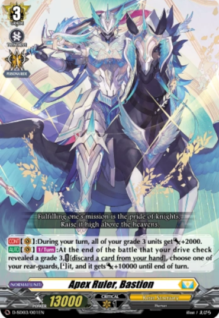

There are 5 main nations in this game, and each nation has a set of leaders to build the deck around.The list below shows the main chracteristics of each nation plus a sample of some of the leaders you build around.
Dragon Empire:
This nation consits mostly of dragons,dinosaurs and other repitiles. Some of the Ridelines for this nation are:
Bavsargra
Nirvana
The End
Brandt Gate:
This nation is made up of aliens, robots, and space police.Some of the Ridelines are:
Seraph Snow
Gravida
Orfist
Keter Sanctuary:
This nation is comprised of knights,angels and witches. Some Ridelines for this nation are:
Bastion
Hexaorb
Lord Blaster
Dark States:
This nation consits mostly of demons. Some of the Ridelines are:
Violence Bruce
Greedon
Baromagnes
Stoichea
This nation mostly comprises animal,plant based creatures,humans and elves. Some of the Ridelines are: